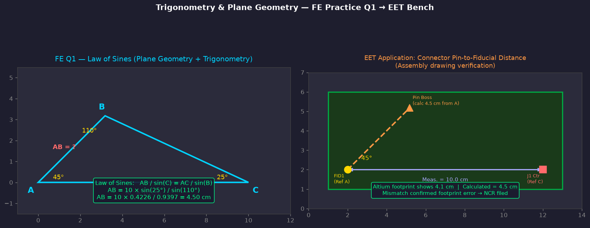
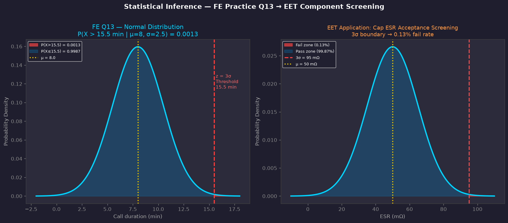
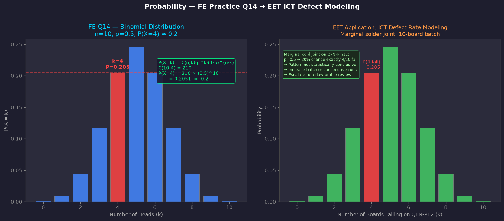
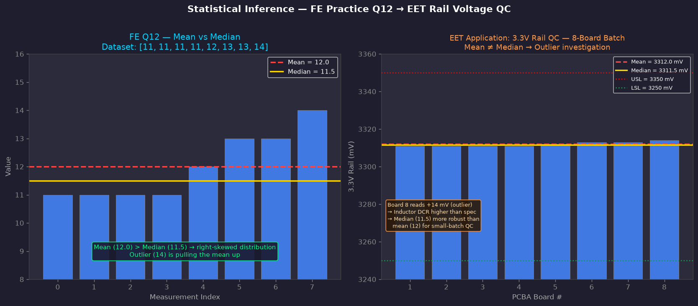

What This Scenario Covers
This scenario maps four specific problems from the NCEES FE Electrical and Computer Practice Exam directly to EET bench work at a PCB manufacturing and test facility. Each problem demonstrates a job qualification math skill: trigonometry, plane geometry, probability, and statistical inference.
Each section includes: the original FE problem statement, the worked solution, a STAR-method response connecting it to bench work, and a Python-generated plot showing the EET application.
FE Exam Specification Coverage
A. Algebra and trigonometry ← Q1 (Law of Sines)
D. Analytic geometry ← Q4 (triangle vertices)
G. Linear algebra ← Q11 (matrix inverse)
A. Measures of central tendency ← Q12 (Median)
B. Probability distributions ← Q13 (Normal), Q14 (Binomial)
C. Expected value ← Q15 (project ranking)
Python Analysis Files
Output → analysis_output/
math_02_triangle_trig.png
math_02_normal_screening.png
math_02_binomial_ict.png
math_02_mean_median_rail.png
FE Problem Statement
In the following triangle, the length (cm) of Side AB is most nearly:
Angle A = 45°, Angle B = 110°, Angle C = 25°, Side AC = 10 cm
Worked Solution — Law of Sines
Given: AC = 10 cm, ∠A = 45°, ∠B = 110°
→ ∠C = 180° - 45° - 110° = 25°
AB / sin(C) = AC / sin(B)
AB = AC × sin(C) / sin(B)
AB = 10 × sin(25°) / sin(110°)
AB = 10 × 0.4226 / 0.9397
AB = 4.50 cm → Answer A

Key Concepts
- Law of Sines connects any triangle's angles to its opposite sides — no right angle required
- ∠C is always solved last: 180° minus the two given angles
- This comes up on PCBs whenever you're checking connector placement vs. drawing reference points
- Altium PCB Inspector reports exact x/y coordinates — but manual trig confirms when the drawing geometry doesn't match
EET Bench Scenario
A test floor maintains a fleet of digital multimeters (DMMs) used for DC voltage verification at ICT stations. Each quarter, the DMMs are checked against a NIST-traceable voltage reference. The measured DC reading error across the fleet follows a normal distribution with a mean drift of 8.0 µV and a standard deviation of 2.5 µV. Any DMM with a reading error exceeding 15.5 µV from the reference is pulled from service and sent for recalibration. The probability that a randomly selected DMM will be flagged for recalibration is most nearly:
Worked Solution — Z-Score & Normal Table
Standardize: z = (x - μ) / σ
z = (15.5 µV - 8.0 µV) / 2.5 µV
z = 7.5 / 2.5 = 3.0
From z-table: F(3.0) = 0.9987 (area left of z=3)
P(drift > 15.5 µV) = 1 - F(3.0) = 1 - 0.9987
P(DMM flagged for recalibration) = 0.0013 → Answer A

Key Concepts
- z = (x - μ) / σ works for any normally distributed measurement — DMM drift, voltage deviation, ESR spread, component tolerance
- z = 3 → 0.0013 tail probability — the 3-sigma rule is the foundation of SPC, Cpk, and calibration interval engineering
- Setting a recalibration threshold at 3σ means 99.87% of instruments are in-service at any given cycle — a balance between measurement integrity and maintenance cost
- Cpk applies the same logic to production: Cpk = min((USL-μ)/3σ, (μ-LSL)/3σ). A Cpk of 1.0 means 3σ = spec limit
- In practice: a DMM with known calibration history can have its drift distribution tracked over time — the mean and σ inform whether to shorten or extend the calibration interval
EET Bench Scenario
A PCB assembly has a suspected intermittent cold solder joint at a test node. Engineering has determined from thermal cycling data that this joint makes reliable electrical contact approximately 50% of the time — it passes ICT on some runs and fails on others depending on micro-expansion of the joint under test conditions. The board is submitted for 10 ICT retest cycles to characterize the intermittency. The probability that the intermittent failure will be captured on exactly 4 of the 10 retest cycles is most nearly:
Worked Solution — Binomial PMF
p = 0.5 (joint fails contact 50% of cycles)
k = 4 (exactly 4 failures captured)
C(10,4) = 10! / (4! × 6!) = 210
P(X=4) = 210 × (0.5)^4 × (0.5)^6
P(X=4) = 210 × (0.5)^10
P(X=4) = 210 / 1024
P(exactly 4 failures detected) = 0.2051 ≈ 0.2 → Answer B

Key Concepts
- Binomial applies when: fixed n trials, each independent, binary outcome (pass/fail), constant p — ICT retest is exactly this model
- An intermittent joint with p = 0.5 has a non-trivial escape probability even after 10 retests — the math justifies engineering escalation over repeated retesting
- C(n,k) = n! / (k!(n-k)!) — the "nCr" key on any scientific calculator; count the combinations, then weight by probabilities
- For large n, binomial approaches normal — at production scale you shift to p-charts and SPC rather than computing individual PMF values
- Defect rate p should come from process FMEA or historical ICT yield data — if p is unknown, escalate to engineering before committing to a retest count
FE Problem Statement
For a series of measurements resulting in values of 11, 11, 11, 11, 12, 13, 13, 14, the arithmetic mean is 12. The median value is:
Worked Solution — Median of Even-Count Dataset
n = 8 (even number of data points)
Median = average of (n/2)th and (n/2 + 1)th values
Median = average of 4th and 5th values
Median = (11 + 12) / 2
Median = 11.5 → Answer C
Mean = 12.0 > Median = 11.5
→ Right-skewed: outlier (14) is pulling the mean up

Key Concepts
- For even n: median = average of the two middle values after sorting
- Mean > Median = right-skewed (outlier pulling mean up) — classic in small-batch QC
- Median is more robust than mean when outliers exist — use it for small test batches (n < 30)
- For large batches, use mean + standard deviation; for small batches, median + range is often more telling
- This maps to SPC control charts: individuals (X) charts flag outliers; R charts track spread
◆ CAD NOTE — Trigonometry & Footprint Verification (Q1)
- Altium PCB Inspector: Right-click any component → PCB Inspector → inspect X/Y coordinates and rotation angle. Compare to assembly drawing reference dimensions.
- Altium Measurement Tool: Place → Measurement → 2-point measurement to verify pin-to-fiducial distances directly on the layout.
- DRC — Courtyard Check: Tools → Design Rule Check → Clearance rules. If footprint has wrong dimensions, component courtyards will overlap adjacent parts and DRC will flag it.
- IPC-2221: Footprint land pattern dimensions should match IPC-SM-782 — Altium's library footprints reference this standard. Always verify against the physical component datasheet mechanical drawing.
- OrCAD Footprint Comparison: In OrCAD PCB Editor → Padstack Editor → verify pad dimensions match your measurement calculations.
◆ CAD NOTE — Statistical Screening & Component Tolerance (Q13, Q12)
- Altium BOM Analysis: Use ActiveBOM → compare vendor tolerance columns against your 3σ acceptance limits. Components with ±20% tolerance on ESR have higher σ than ±10% parts.
- Cpk in MES: Process Capability Index Cpk = min((USL-μ)/3σ, (μ-LSL)/3σ). A Cpk ≥ 1.33 means less than 0.003% defect rate — tighter than the 0.13% at Cpk=1.0 (z=3).
- IPC-A-610H — Component Placement: Section 8.3 covers component orientation and placement tolerances. Dimensional verification using the Law of Sines applies when assembly drawings use angular references rather than Cartesian offsets.
- OrCAD PSpice: Monte Carlo analysis in PSpice lets you assign σ to component values and run statistical simulation — the same z-score math applies to simulate how spread in ESR affects rail voltage.
- Rail Voltage QC: When measuring voltage rail deviations across a board batch, use median as primary metric for n < 15 boards. Flag any board where deviation exceeds μ + 2σ of the batch for root-cause investigation.
◆ CAD NOTE — Binomial Defect Rate & Test Coverage (Q14)
- ICT Test Coverage: JTAG/boundary-scan and in-circuit test coverage percentages are probability calculations. If a node has 85% test coverage and p=0.05 defect rate, the probability of an escape per board is (1 - 0.85) × 0.05 — binomial thinking applied to test planning.
- Altium DRC: Not all defects are detectable at DRC. DRC catches design-rule violations (clearance, annular ring, net shorts) but not manufacturing variation. Binomial modeling fills this gap.
- Defect Rate Tracking: MES systems track yield per test step. If ICT yield on a net drops below historical baseline by more than 2σ (using a p-chart in SPC), escalate — the binomial distribution tells you how rare that drop should be under normal process conditions.
- IPC-7711/7721 Rework: When deciding whether to rework a cold joint or scrap a board, the binomial model of pass probability per rework attempt informs whether repeated rework attempts will yield a reliable joint or whether you're wasting cycles on a structurally compromised pad.
Related Files in This Project
simulate_math_applied_01.py — Python: Cpk, phasor trig, trace geometry, measurement uncertainty
scenario_math_applied_01.html — HTML: Math Set 01 EET scenario
signal_analysis_deep.py — Python: ESR, RLC Bode, FFT, step response
instrument_automation.py — Python: pyvisa SCPI bring-up automation
ee1_star_positioning.html — HTML: EE I STAR conversations